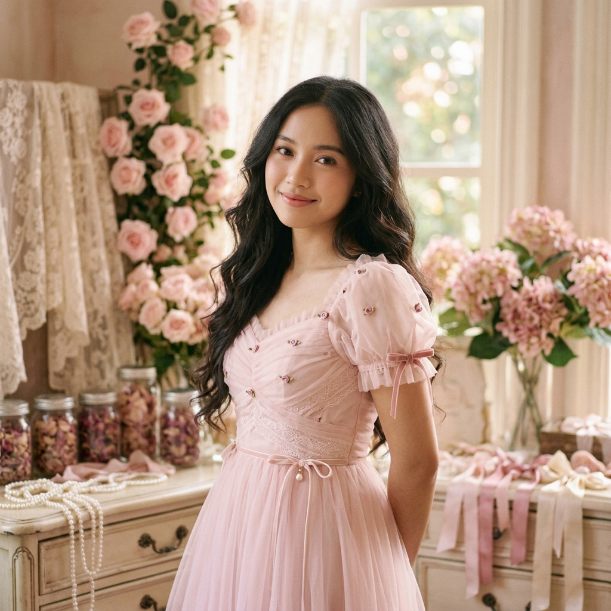

Selamat datang di portofolio pribadi saya. Saya adalah pelajar SMK jurusan Rekayasa Perangkat Lunak yang memiliki ketertarikan pada teknologi, seni, dan musik.

Mengenal lebih dekat identitas diri, perjalanan belajar, serta semangat dalam mengembangkan potensi.
Anggun adalah seorang pelajar kelas XI jurusan Rekayasa Perangkat Lunak (RPL) di SMK Negeri Tembarak Temanggung. Saat ini Anggun sedang menempuh pendidikan di bidang teknologi dan pengembangan perangkat lunak, sekaligus mengembangkan kemampuan dalam bekerja sama dengan orang lain.
Memiliki semangat belajar yang tinggi dan selalu terbuka untuk hal-hal baru, Anggun aktif mempelajari dasar-dasar rekayasa perangkat lunak dengan tekun. Di samping dunia teknologi, Anggun juga memiliki ketertarikan mendalam pada bidang seni dan musik yang menjadi sarana ekspresi diri serta inspirasi kreativitas.
Data identitas pribadi pelajar
Institusi pendidikan tempat mengasah kompetensi rekayasa perangkat lunak dan pengembangan karakter.
Fokus kompetensi interpersonal dan dasar teknologi yang terus diasah selama pembelajaran di sekolah.
Mempelajari logika pemrograman, pemecahan masalah algoritma, serta dasar pembuatan perangkat lunak.
Mempelajari prinsip fundamental teknologi informasi, lingkungan kerja software, dan kolaborasi digital.
Empat prinsip utama yang membentuk etos belajar dan integritas dalam kehidupan sehari-hari.
Mampu menyelesaikan tugas dengan usaha sendiri dan berinisiatif dalam belajar.
Berusaha menaati aturan dan menyelesaikan tanggung jawab sesuai waktu.
Berusaha menyelesaikan tugas dan kewajiban dengan sebaik-baiknya.
Dapat berkolaborasi dan menghargai anggota tim.
Keseimbangan antara logika rekayasa perangkat lunak dan keindahan seni ekspresi diri.
"Memiliki ketertarikan terhadap seni dan musik, khususnya bernyanyi dan mendengarkan musik. Kegiatan tersebut menjadi salah satu cara untuk mengekspresikan diri, mengembangkan kreativitas, dan menikmati waktu luang."
Harmoni Melodi dan Kreativitas
Pengalaman nyata yang telah diikuti sebagai wadah pengasahan minat dan keberanian tampil.
Silakan tinggalkan pesan atau sapaan untuk keperluan kolaborasi, saran, ataupun komunikasi lainnya.
Terima kasih telah mengunjungi website portofolio pribadi saya. Saya senantiasa terbuka untuk menjalin pertemanan, berdiskusi mengenai teknologi, atau berkolaborasi dalam proyek positif.